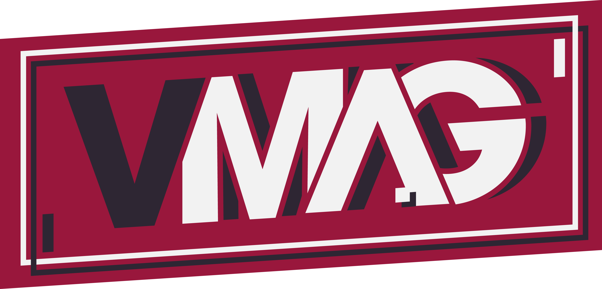
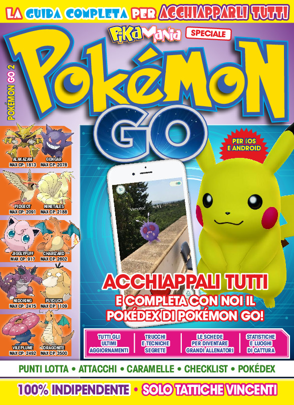
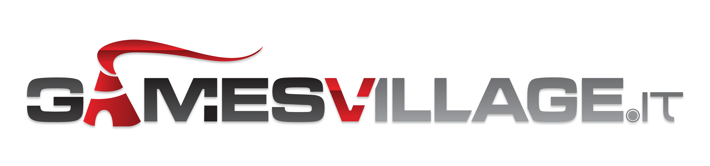

Hello World!
Senior Editor @ GamesVillage.it.
Contributing Writer @ Idra Editing.

I started my career in the video game industry in 2015, acting as a News Editor at VMAG, the official magazine of VIGAMUS Academy. During the following years, I continued to develop my expertise in the field of specialized journalism,
working as a News Editor for Game Legends and, finally, as the Lead Editor at VR Gamer, the first italian web magazine dedicated to VR, AR, and MR.

During my time at VR Gamer I followed the entire work pipeline of the editorial staff, while directing the schedule and the social media channels of the magazine. My contribution also led to a smooth blending of VR Gamer and its editorial
staff inside VIGAMUS Magazine, increasing the readership of both websites and strengthening the brand of VIGAMUS Foundation.

While working as a web editor, I also undertook a new job in 2016 as a Contributing Writer at Idra Editing, delivering a set number of pages for print magazines such as PSM Gamer, Switch Magazine, Retrogame Magazine, Pika Mania, Clash of
Clans & Royale, Come Vincere Sempre a Fortnite & Invincibili a Fortnite.

Furthermore, I proceeded to work in mid-2017 as a News Editor at GamesVillage.it, one of the most known video game magazine in Italy. While coordinating several editorial efforts for the website, ranging from the management of the team to the
proposal of weekly articles, I have soon achieved the role of Senior Editor at GamesVillage.it, working day-by-day on the quality control of the magazine.
Lead Editor @ VR Gamer (2017-18)
News Editor @ VMAG - VIGAMUS Magazine (2015-17)
News Editor @ Game Legends (2016)

2011-15 - Istituto Kennedy Frascati
Diploma in Human Sciences
2015-19 - Università degli studi Link Campus University di Roma
Degree in Digital Innovation and Communication,
Curriculum Video Games (L-20)
2019... - Università degli studi Link Campus University di Roma
Master's Degree in Technologies, Codes and Communication,
Curriculum Game Development, Marketing and Communication (LM-59)
If you have any queries or want to get in touch, then please contact me through the following:
CONTACT ME